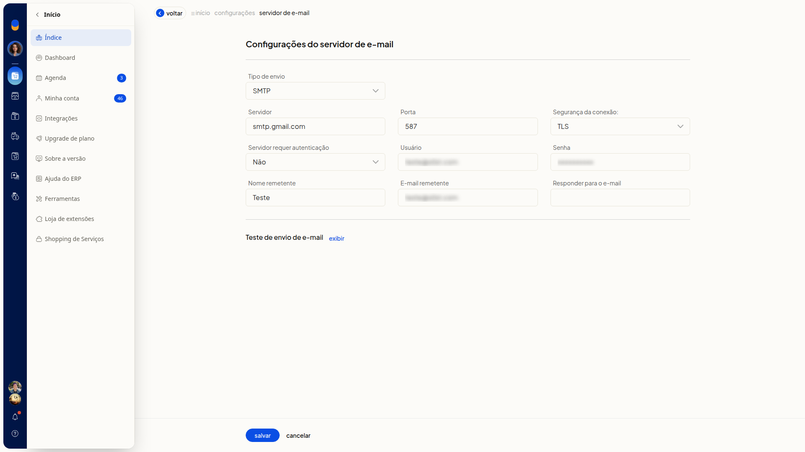
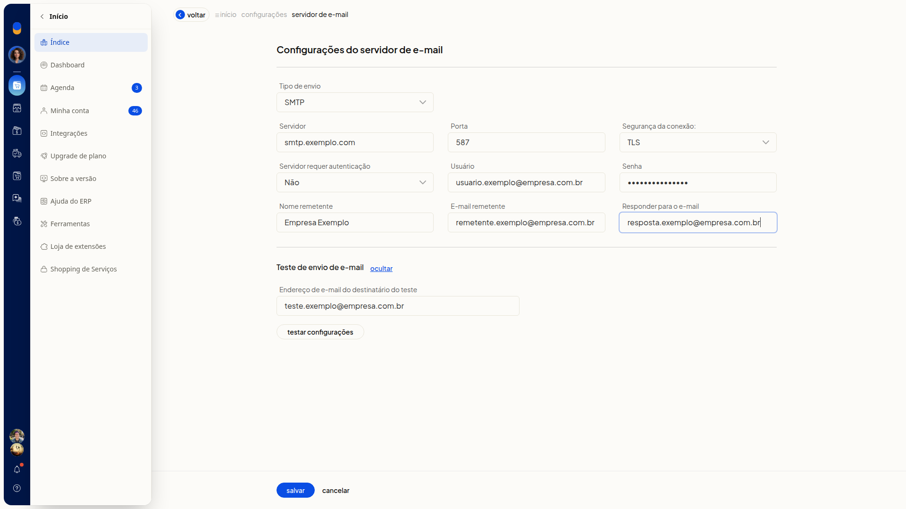
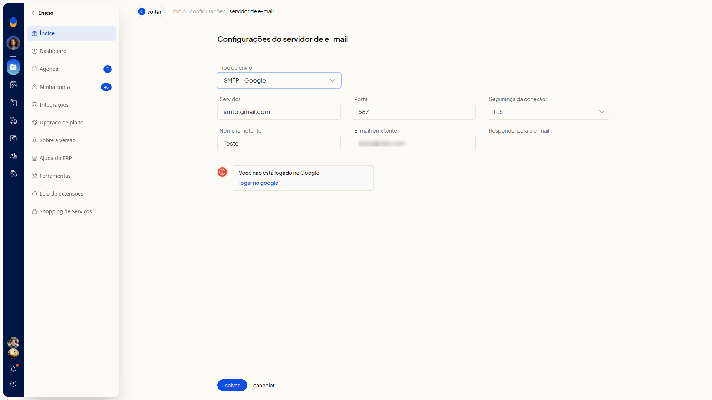

Configurar o servidor de e-mail
No ERP da Olist, você define como os emails saem do sistema. Em Configurações do servidor de e-mail, você escolhe SMTP, SMTP - Google ou MAIL, informa servidor, porta, segurança, autenticação e dados do remetente, e testa o envio.
Pré-requisitos
- Se Configurações do servidor de e-mail não aparecer para você, peça acesso ao administrador da conta.
Importante
- Para o tipo SMTP, tenha o servidor, a porta, a segurança da conexão e, se o provedor exigir, Usuário e Senha.
- No tipo SMTP - Google, clique em Logar no Google quando aparecer o aviso Você não está logado no Google. Sem esse login, o tipo não fica concluído.
- Nenhum campo da tela é marcado como obrigatório.
Instruções
Pelo tipo SMTP
-
Acesse Configurações > Configurações ERP > Geral > Configurações do servidor de e-mail.

-
Em Tipo de envio, selecione SMTP.

Servidor e autenticação
-
Preencha Servidor e Porta.
-
Em Segurança da conexão:, selecione SSL, TLS ou Nenhuma.
-
Em Servidor requer autenticação, selecione Sim ou Não.

-
Preencha Usuário e Senha, tanto com Sim quanto com Não.
Remetente
-
Preencha Nome remetente, E-mail remetente e Responder para o e-mail.

-
Clique em Salvar para gravar o servidor SMTP, o remetente e o endereço de resposta.
Pelo tipo SMTP - Google
-
Acesse Configurações > Configurações ERP > Geral > Configurações do servidor de e-mail.
-
Em Tipo de envio, selecione SMTP - Google.

-
Confira Servidor smtp.gmail.com, Porta 587 e Segurança da conexão: TLS. Servidor requer autenticação, Usuário e Senha não aparecem neste tipo.
-
Clique em Logar no Google se aparecer o aviso Você não está logado no Google.
-
Clique em Salvar para usar o SMTP do Google.
Pelo tipo MAIL
-
Acesse Configurações > Configurações ERP > Geral > Configurações do servidor de e-mail.
-
Em Tipo de envio, selecione MAIL. A tela deixa de pedir os dados de SMTP e mantém Tipo de envio e Teste de envio de e-mail.

-
Clique em Salvar para usar o tipo MAIL.
Testar as configurações
-
Acesse Configurações > Configurações ERP > Geral > Configurações do servidor de e-mail.
-
Em Teste de envio de e-mail, clique em exibir.

-
Preencha Endereço de e-mail do destinatário do teste.

-
Clique em Testar configurações para disparar um email ao destinatário informado.